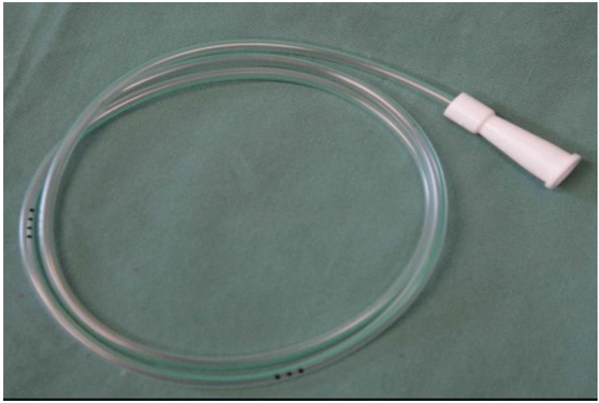
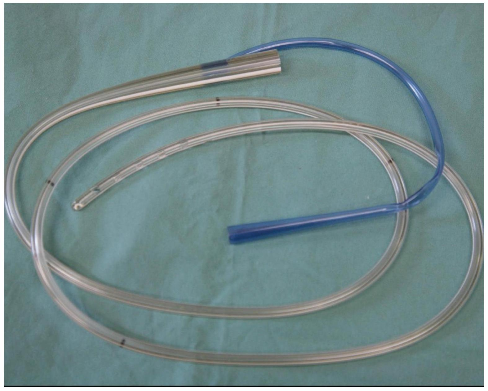
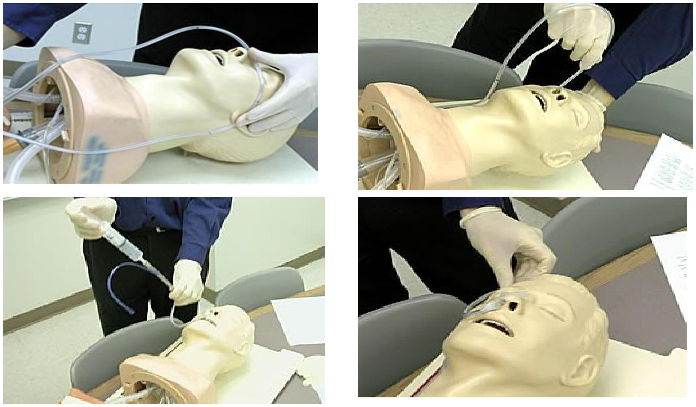
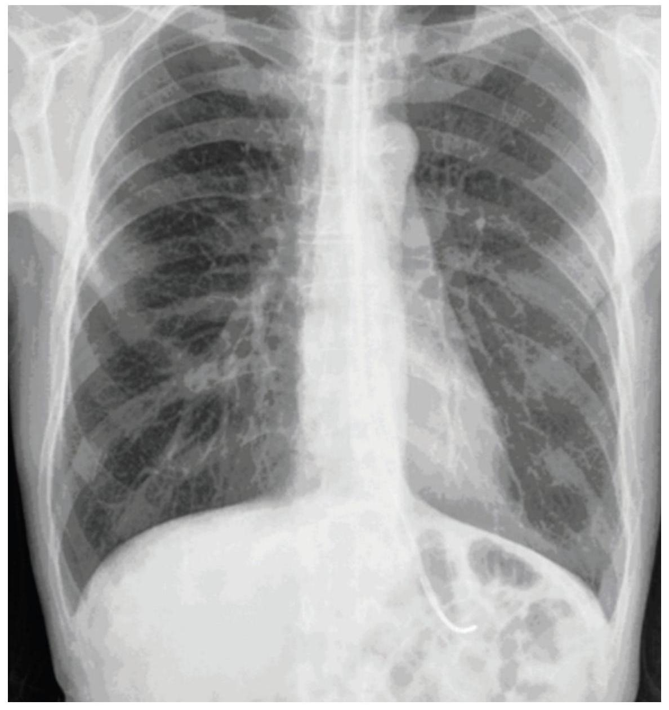
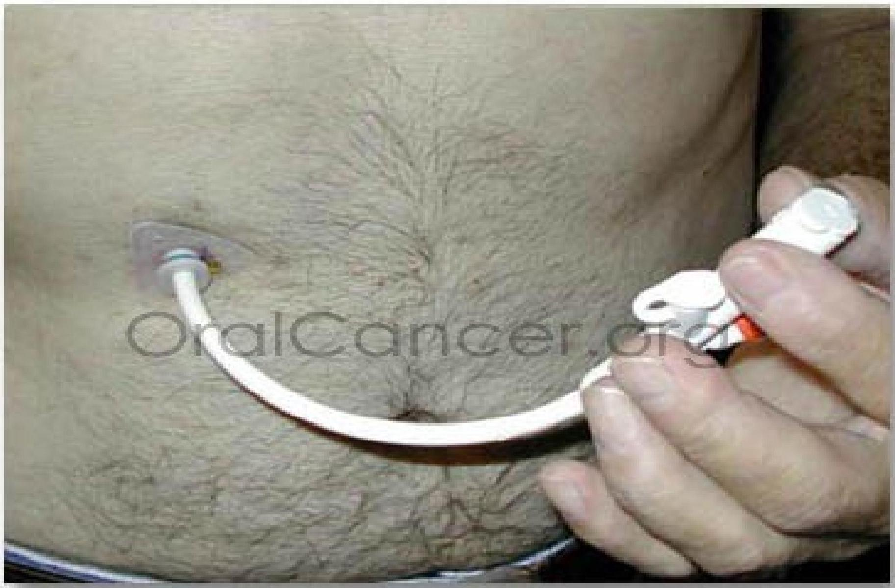

Types and Procedures of Tube and Enteral Feeding
Nasogastric Intubation and Feeding
Nasogastric intubation
Nasogastric intubation refers to the process of placing a soft plastic nasogastric (NG) tube through a patient's nostril, past the pharynx and down the esophagus into a patient's stomach.
Nasogastric tube feeding
- Most common first line route.
- Easy to place at bedside by nursing staff.
- Use small flexible tubes to avoid nasal skin erosion.
- Check position via auscultation/aspiration of gastric contents and gastric PH, as per nursing protocol. If in doubt regarding position by auscultation and aspiration then confirm with abdominal X-ray.
- Check residuals to evaluate tolerance.
Requirements for Nasogastric Tube Feeding
- Personal protective equipment
- NG/OG tube
- Catheter tip irrigation 60 ml syringe
- Water-soluble lubricant, preferably 2% Xylocaine jelly
- Adhesive tape
- Low powered suction device OR Drainage bag
- Stethoscope
- Cup of water (if necessary)
- Emesis basin
- pH indicator strips
Procedure for Nasogastric Tube Insertion
- To insert a nasogastric tube, have the patient tilt his head slightly back and gently ease the lubricated tubing into the nares.
- Have the patient tilt his head forward into a neutral upright position, hold his breath and swallow.
- Gravity and swallowing will help move the tube down the esophagus as you gently continue to advance the tube.
- The patient can assist by swallowing and can even take sips of water to help move the tubing down into the stomach.
- Advance the tubing until you reach the marker tape that you applied when measuring the distance to the patient's stomach.
- Secure the tubing with tape and check the tubing for placement.
- If the patient gags during the procedure, stop advancing the tube and allow the patient to rest.
- If the tubing comes out of the mouth, retract the tubing and try again.
- If the patient is unconscious, advance the tube between respirations to avoid placing the tube into the trachea.
- If the patient becomes cyanotic, coughs or displays any signs of respiratory distress, remove the tubing, allow the patient to rest and begin again.
NG Tubes - Visuals
 Inserting NG Tube - Visuals
Nasogastric tube located in the stomach on chest X-ray
Precautions
- Do not use force when inserting a NG tube. If resistance occurs, rotate and retract the tube slightly and try again. Forcing the tube can cause traumatic injury to the tissue of the nose, throat or esophagus.
- Always check the tube positioning before giving feedings. If the tube is out of place the patient may aspirate the feeding solution into the lungs.
- Keep the patient in an upright or semi-upright sitting position when delivering a tube feeding to enhance peristalsis and avoid regurgitation of the feeding.
- Cap or clamp off the NG tube when not in use to prevent backflow of stomach contents or accumulation of air in the stomach.
Documentation
Record the following information on the Patient Care Record:
- name of the formula used.
- amount of formula infused.
- amount of flush.
- time of the feeding.
- patient response.
- implementation of aspiration precautions
Complications of Nasogastric Tube Feedings
- obstruction of the tube
- perforation of the tube
- tube migration out of correct position
- regurgitation and aspiration of the feeding
- diarrhea
- nausea and vomiting
- abdominal distention, cramping and discomfort from too much feeding or a rate of feeding that is too rapid
Removing Nasogastric Tube
Purpose: to allow for resumption of normal GI functions
Indications: when recovery from the reason foor insertion is achieved.
Procedure:
- Check PO for discontinuation of nasogastric tube.
- Explain procedure to patient, perform hand hygiene and don gloves.
- Turn off suction device and remove tape from pt's nose or cheek.
- Stand on patient's right side if right handed, place disposable pad across patient's chest.
- Inject air before pulling out tube to prevent residual contents draining into oropharynx.
- Ask patient to hold breath to help preventing aspiration.
- Dominant hand to draw the tube out into the towel held by non-dominant hand, to minimize dripping and unpleasant sight.
- Record the drainage collected by suction machine or drainage bag as fluid output.
- Dispose and perform hand hygiene.
Nasojejunal Feeding
- Used for patients who do not tolerate gastric feeds or patients with known abnormality of gastric emptying.
- Can attempt to place at bedside and check X-ray for migration past the pyloris.
- If unsuccessful then position tube under fluoroscopic or endoscopic guidance.
- Residuals not helpful if tube remains post-pyloric, watch for signs of abdominal pain or distension to determine tolerance. Avoid starting feeds until patient is hemodynamically stable and initial volume resuscitation is complete.
Caution: Patients with nasal obstruction or severe facial fractures should have these tubes placed orally.
Open Gastrostomy
- These are usually performed either in conjunction with a laparotomy for other reasons or for patients who cannot have percutaneous placement due to intra-abdominal adhesions.
- This procedure requires a general anesthetic.
- The stomach is tacked to the abdominal wall with sutures and an external suture is usually placed around the tube to prevent it from being dislodged.
- The tube should be left to gravity drainage for 24 hours and then can start enteral feeds.
- Can check residuals for tolerance.
- Surgical incision should remain dressed for 24 hours and then left open to air if there is no drainage.
Transgastric Jejunostomy
- These tubes can be placed surgically, or with endoscopic or radiographic guidance.
- May contain a second port for gastric aspiration.
- Can be converted to gastrostomy later.
- Cannot monitor residuals to determine tolerance.
- Post placement care is same as PEG.
Surgical Jejunostomy
- Usually placed in conjunction with a laparotomy or for patient who need long term enteral access and cannot tolerate gastric feeds.
- These can be placed either via a laparoscopic or open approach and require a general anesthetic.
- The jejunum is tacked to the abdominal wall with sutures and an external suture is usually placed around the tube to prevent it from being dislodged.
- Enteral feeds can begin 12 hours after surgery.
NOTE: Needle catheter jejunostomy tubes are much smaller diameter than standard tubes and are thus much more likely to obstruct. They must be flushed frequently and high fiber formula and medications should not be administered through these tubes.
NOTE: All tubes not being used for continuous enteral feeds should be flushed with 30cc (adults) or 5-10 cc (pediatric) water every 4 hrs to ensure patency.
NOTE: All tubes should be marked at the skin entrance to allow monitoring for migration of the tube. Tube position should be monitored by the nursing staff every Shift.
Enteral Feeding
Candidates for enteral tube feeding are clients who have a functional GI tract and will not, should not, or cannot eat.
Therefore, tube feedings are used for clients who are (or may become) malnourished and in whom oral feedings are insufficient to maintain adequate nutritional status.
Enterostomy is the surgical creation of an artificial fistula (gastrostomy, jejunostomy) in the intestines by incision through the abdominal wall.
Tube enterostomies can be placed at various points along the GI tract and are performed when long-term tube feeding is anticipated or when obstruction makes nasal intubation impossible.
Nutrients administered through tubes are liquefied so they can be easily digested and absorbed.
Indications for Enteral Feeding
Indications for use if a patient needs nutritional support and the GI tract is accessible and functioning:
- Severe malnutrition - weight loss >10%, albumin <30 g/L, muscle wasting and peripheral oedema; and/or
- Moderately malnourished but would be expected to develop significant malnutrition in the short term as a result of an underlying condition eg head and neck cancers or advanced MND; and/or
- Normally nourished but unable to commence normal feeding for a considerable length of time (>3-4 days) e.g. post stroke; and/or
- Unable to meet nutritional requirements via oral diet alone
Other Indications:
- Clients unable to eat
- ie: comatose with functional GI system
- Ventilated patients
- Post-op oral, head or neck surgery
- Clients who will not eat
- Older adults
- Confused clients
- Unable to maintain adequate oral nutrition - Cancer, sepsis, infection, trauma, head injury
Contraindications for Enteral Feeding:
- Major intra-abdominal sepsis
- Total obstruction of GI tract or abdominal distension of unknown pathology
Problems and Complications - Possible Causes
- Diarrhea
- Too rapid administration of the feed therefore may need to decrease the volume given and the rate
- Causes not related to enteral nutrition such as antibiotic treatment
- Nausea, vomiting, large aspirates
- A condition causing delayed gastric emptying
- Overfeeding - need to withhold feed for three hours and recommence at a lower rate
- Abdominal Discomfort
- Solution too cold
- Gastric distension
- Too rapid administration
Percutaneous Endoscopic Gastrostomy (PEG)
PEG feeding tubes are increasingly used for long term enteral nutrition. It is used where patients cannot maintain adequate nutrition with oral intake.
Indications include difficulties with oral intake often where obstruction to the upper airway or gastrointestinal tract makes passing a nasogastric tube difficult.
Indications for PEG
- Head and neck cancers. It is useful particularly when surgery is extensive and when combined with chemotherapy, radiotherapy or both.
- Malignant bowel obstruction including oesophageal cancer
- Neurological conditions are the most common indications for PEG and include:
- Stroke
- Disorders of swallowing
- Neurosurgical disease
- Parkinson's disease
- Brain tumours
- HIV encephalopathy
- Neonatal encephalopathy
- Head injury patients
- AIDS and HIV encephalopathy (improves nutritional status but not survival)
- Crohn's disease
- Burns patients
Contraindications for PEG
- Acutely ill patients
- Patients with short life expectancy
- Patients with severe coughing
Benefits of PEG:
- Well tolerated (better than nasogastric tubes)
- Improved nutritional status
- Ease of usage over other methods (nasogastric or oral feeding) reported by carers
- Satisfactory use by home carers
- Low incidence of complications
- Reduction in aspiration pneumonia associated with swallowing disorders
- Cost effective relative to alternative methods particularly when reasonably long survival expected[37]
Care of PEG tube
- Examine skin around site for infection/ irritation.
- Note measuring guide number at end of external fixation device.
- Clean stoma site with sterile saline.
- Dry area with gauze.
- Rotate gastrostomy tube to prevent adherence to sides of track.
- Re-attach external fixation device to abdomen.
- Attach gastrostomy tube gently to fixation device and position as before according to mark/number on tube.
- Avoid use of bulky dressings.